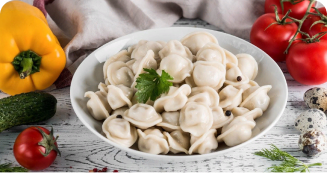
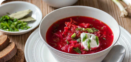

наши популярные блюда и напитки
-

Пельмени ( из свинины). Традиционное блюдо русской кухни, которое состоит из мелко нарезанного мяса, смешанного с луком и специями и завернутого в тонкое тесто.
-

Борщ. Горячий заправочный суп на основе свёклы, которая придаёт ему характерный красный цвет.
-

Сырники. Жареное горячее блюдо из творога в форме биточков, кружочков или небольших лепёшек из теста на основе творога и пшеничной муки.
-
.png)
Голубцы(мясные). Традиционным «ареалом обитания» голубцов можно назвать Восточную Европу и Скандинавию. Готовятся они или со смесью из мясного фарша и риса.
-
Чай зелёный (милиса). Это полезный напиток для любого сезона. В жару даст возможность почувствовать свежесть и прохладу природного ментола, а зимой - тонизирует организм.
-

Компот(вишнёвый). Отлично освежает в жаркий летний период времени. Он богат витаминами и микроэлементами, поэтому его полезно пить всем.
-
Тархун. Сладкий безалкогольный газированный прохладительный лимонадный напиток изумрудно-зелёного цвета. Изготовленный из воды, лимонной кислоты, сахара и экстракта эстрагона.
-
Лимонад. Традиционный домашний напиток с использованием лимонного сока, воды и подсластителя, такого как тростниковый сахар, простой сироп, кленовый сироп или мед.